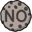

Cookie Auto Decline
Status:
Cookie oder LocalStorage gesetzt.
Cookie Banner Anbieter:
Einwilligungsstatus:
Nicht unterstützte Seite. Das Addon ist auf dieser Seite dauerhaft deaktiviert.
Fehler beim Abrufen des Status. Öffne dieses Popup neu für einen neuen Versuch.
Erweiterte Cookie Banner Erkennung (beta):